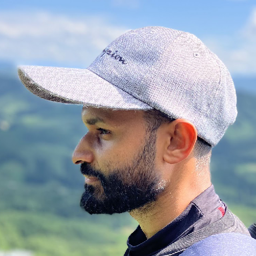

Email:
isuru.jayarathne@gmail.com
Phone:
[+81] 070-4468-7841
Location:
Saitama, Japan
GitHub:
github.com/bit-magpie
LinkedIn:
linkedin.com/in/isuru-jayarathne/
Google Scholar:
scholar.google.com/ij/
Welcome — I'm Isuru
I am a researcher and engineer working across the domains of physiological signal analysis and robotics, unified by a strong foundation in artificial intelligence and machine learning. In the field of biosignal analysis, I focus on decoding neural and cardiac signals—primarily EEG and ECG—to uncover insights into brain states, cognitive functions, and physiological health. In robotics, I work on designing and developing intelligent systems including multi-robot path planning, robot arm control, and autonomous robots for disaster response. I integrate advanced AI/ML techniques such as large language models (LLMs), computer vision (CV), and reinforcement learning (RL) to solve complex problems in both physiological data interpretation and social robotics.
Research & Engineering Focus
I explore questions such as:
- How can machine learning uncover hidden patterns in neural and cardiac signals?
- How can robots plan and coordinate efficiently in uncertain, dynamic environments?
- How can robots plan and coordinate efficiently in uncertain, dynamic environments?
My domains of expertise include:
- Biosignal Processing
- Robot Motion Planning
- Social Robotics
- AI/ML for Real-World Applications
Other Interests
- Philosophy
- Psychology
- Politics